20 April 2001. Thanks to Anonymous
[Letter, 3 pp.]
MATTHEW J. OPPENHEIM, ESQ.
Address illegible
April 9, 2001
Professor Edward Felton
Department of Computer Science
Princeton University
Princeton, NJ 08544
Dear Professor Felten,
We understand that in conjunction with the 4th International Information Hiding Workshop to be held April 25-29, 2001, you and your colleagues who participated in last year's Secure Digital Music Initiative ("SDMI") Public Challenge are planning to publicly release information concerning the technologies that were included in that challenge and certain methods you and your colleagues developed as part of your participation in the challenge. On behalf of the SDMI Foundation, I urge you to reconsider your intentions and to refrain from any public disclosure of confidential information derived from the Challenge and instead engage SDMI in a constructive dialogue on how the academic aspects of your research can be shared without jeopardizing the commercial interests of the owners of the various technologies.
As you are aware, at least one of the technologies that was the subject of the Public Challenge, the Verance Watermark, is already in commercial use and the disclosure of any information that might assist others to remove this watermark would seriously jeopardize the technology and the content it protects.1 Other technologies that were part of the Challenge are either likewise in commercial use or could be could be utilized in this capacity in the near future. Therefore, any disclosure of information that would allow the defeat of those technologies would violate both the spirit and the terms of the Click-Through Agreement (the "Agreement"). In addition, any disclosure of information gained from participating in the Public Challenge would be outside the scope of activities permitted by the Agreement and could subject you and your research team to actions under the Digital Millennium Copyright Act ("DCMA").
____________________
1 The Verance Watermark is currently used for DVD-Audio and SDMI Phase I products and certain portions of that technology are trade secrets.
We appreciate your position, as articulated in the Frequently Asked Questions document, that the purpose of releasing your research is not designed to "help anyone impose or steal anything." Further more, you participation in the Challenge and your contemplated disclosure appears to be motivated by a desire to engage in scientific research that will ensure that SDMI does not deploy a flawed system. Unfortunately, the disclosure that you are contemplating could result in significantly broader consequences and could directly lead to the illegal distribution of copyrighted material. Such disclosure is not authorized in the Agreement, would constitute a violation of the Agreement and would subject your research team to enforcement actions under the DMCA and possibly other federal laws.
As you are aware, the Agreement covering the Public challenge narrowly authorizes participants to attack the limited number of music samples and files that were provided by SDMI. The specific purpose of providing these encoded files and for setting up the Challenge was to assist SDMI in determining which of the proposed technologies are best suited to protect content in Phase II products. The limited waiver of rights (including possible DMCA claims) that was contained in the Agreement specifically prohibits participants from attacking content protected by SDMI technologies outside the Public Challenge. If your research is released to the public this is exactly what could occur. In short, you would be facilitating and encouraging the attack of copyrighted content outside the limited boundaries of the Public Challenge and thus places you and your researchers in direct violation of the Agreement.
In addition, because public disclosure of your research would be outside the limited authorization of the Agreement, you could be subject to enforcement actions under federal law, including the DMCA. The Agreement specifically reserves any rights that proponents of the technology being attacked may have "under any applicable law, including, without limitation, the U.S. Digital Millennium Copyright Act, for any acts not expressly authorized by their Agreement." The Agreement simply does not "expressly authorize" participants to disclose information and research developed through participating in the Public challenge and such disclosure could be the subject of a DMCA action.
We recognize and appreciate your position, made clear throughout this process, that it is not your intention to engage in any illegal behavior or to otherwise jeopardize the legitimate commercial interests of others. We are concerned that your actions are outside the peer review process established by the Public Challenge and setup by engineers and other experts to ensure the academic integrity of this project. With these facts in mind, we invite you to work with the SDMI Foundation to find a way for you to share the academic components of your research while remaining true to your intention to not violate the law or the Agreement. In the meantime, we urge you to withdraw the paper submitted for the upcoming Information Hiding Workshop, assure that it is removed from the Workshop distribution materials and destroyed, and avoid a public discussion of confidential information.
Sincerely,
[Signature]
Matthew Oppenheim, Secretary
The SDMI Foundation
cc: Mr. Ira S. Moskowitz, Program Chair, Information Hiding Workshop, Naval
Research Laboratory
Cpt. Douglas S. Rau, USN, Commanding Officer, Naval Research Laboratory
Mr. Howard Ende, General Counsel of Princeton
Mr. Edward Dobkin, Computer Science Department Head of Princeton
[Paper, 15 pp.]
Scott A. Craver1, John R McGregor1, Min Wu1,
Bede Liu1,
Adam Stubblefield2, Ben Swartzlander2, Dan S.
Wallach2,
Drew Dean3, and Edward W. Felten4
1 Dept. of Electrical Engineering, Princeton University
2 Dept. of Computer Science, Rice University
3 Computer Science Laboratory, Xerox Palo Alto Research Center
4 Dept. of Computer Science, Princeton University
Abstract. The Secure Digital Music Initiative is a consortium of parties interested in preventing piracy of digital music, and to this end they are developing architectures for content protection on untrusted platforms. SDMI recently held a challenge to test the strength of 4 watermarking technologies, and 2 other security technologies. No documentation explained the implementations of the technologies, and neither watermark embedding nor detecting software was directly accessible to challenge participants. We nevertheless accepted the challenge, and learned a great deal about the inner workings of the technologies. We report on our results here.
The Secure Digital Music Initiative (SDMI), a consortium of music-industry companies, is working to develop and standardize technologies that give music publishers more control over what consumers can do with recorded music that they buy. SDMI has been a somewhat secretive organization, releasing little information to the public about its goals, deliberations, and technology.
In September 2000, SDMI announced a "public challenge" in which it invited members of the public to try to break certain data-encoding technologies that SDMI had developed [3]. The challenge offered a valuable window into SDMI, not only into its technologies but also into its plans and goals. We decided to use the challenge to learn as much as we could about SDMI. This paper is the result of our study.1 Section 2 presents an overview of the HackSDMI challenge. Section 3 analyzes the watermark challenges. Section 4 analyzes the non-watermark challenges. Finally, we present our conclusions in section 5.
____________________
1 The SDMI challenge offered a small cash payment to be shared among everyone who broke at least one of the technologies and was willing to sign a confidentiality agreement giving up all rights to discuss their findings. The cash prize amounted to the price of a few days of time from a skilled computer security consultant, and it was to be split among all successful entrants, a group that we suspected might be significant in size. We chose to forgo the payment and retain our right to publish this paper.
The SDMI challenge extended over roughly a three-week period, from September 15, 2000 until October 8, 2000. The challenge actually consisted of six sub-challenges, named with the letters A through F, each involving a different technology developed by SDMI. We believe these challenges correspond to submissions to the SDMI's Call for Proposals for Phase II Screening Technology [4]. According to this proposal, the watermark's purpose is to restrict an audio clip which is compressed or has previously been compressed. That is, if the watermark is present an audio clip may yet be admitted into an SDMI device, but only if it has not been degraded by compression. For each challenge, SDMI provided some information about how a technology worked, and then challenged the public to create an object with a certain property. The exact information provided varied among the challenges. We note, though, that in all six cases SDMI provided less information than a music pirate would have access to in practice.
2.1 Watermark Challenges
Four of the challenges (A, B, C, and F), involved watermarking technologies, in which subtle modifications are made to an audio file, to encode copyright control information without perceptible change in how the file sounds. Watermarks can be either robust or fragile. Robust watermarks are designed to survive common transformations like digital-to-audio conversion, compression and decompression, and the addition of small amounts of noise to the file. Fragile watermarks do not survive such transformations, and are used to indicate modification of the file. For each of the four watermark challenges, SDMI provided three files:
- File 1: an unwatermarked song;- File 2: File 1, with a watermark added; and
- File 3: another watermarked song.
The challenge was to produce a file that sounded just like File 3 but did not have a watermark -- in other words, to remove the watermark from File 3.
SDMI provided an on-line "oracle" for each challenge. Entrants could email a file to the oracle, and the oracle would tell them whether their submission satisfied the challenge, that is, whether it contained no detectable watermark while still sounding like File 3. Entrants were given no information about how watermark information was stored in the file or how the oracle detected watermarks, beyond the information that could be deduced from inspection of the three provided files.
2.2 Challenges D and E
Challenge D concerned a technology designed to prevent a song from being separated from the album in which it was issued. Normally, every Compact Disc contains a table of contents, indicating the offsets and lengths of each audio track, followed by the audio data itself. Challenge D adds an "authenticator" track (approximately 50ms of very quiet audio,) a digital signature derived from the table of contents, which is supposed to be difficult to compute for an arbitrary CD. Challenge D is discussed in more detail in Section 4.1.
Challenge E involved a technology similar to D, but one which would be immune the obvious attack on technology D, in which one compiled an unauthorized CD with the same table of contents as an authorized one, for which the authenticator track is given. Unfortunately, this challenge was constructed in a way that made it impossible to even start analyzing the technology. SDMI provided an oracle for this challenge, but unfortunately provided no music samples of any kind, so there was no way to determine what the oracle might be testing for.
Given these facts, we decided not to analyze Challenge E. It is discussed
briefly in Section 4.2.
In this section, we describe our attack(s) on each of the four watermark challenges (A,B,C,F). Our success was confirmed by emails received from SDMI's oracles.
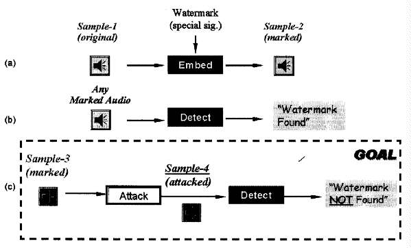
Fig. 1. The SDMI watermark attack problem. For
each of the four watermark challenges, Sample-1, sample-2, and sample-3 are
provided by SDMI sample-4 is generated by participants in the challenge and
submitted to SDMI oracle for testing.
Figure 1 provides an overview of the challenge goal. As mentioned earlier, there are three audio files per watermark challenge: an original and watermarked version of one clip, and then a watermarked version of a second clip, from which the mark is to be removed. All clips were 2 minutes long, sampled at 44.1kHz with 16-bit precision.
The reader should note one serious flaw with this challenge arrangement. The goal is to remove a robust mark, while these proposals appear to be Phase II watermark screening technologies [4]. As we mentioned earlier, a Phase II screen is intended to reject audio clips if they have been compressed, and presumably compression degrades a fragile component of the watermark. An attacker need not remove the robust watermark to foil the Phase II screen, but could instead repair the modified fragile component in compressed audio. This attack was not possible under the challenge setup.
3.1 Attack and Analysis of Technology A
A reasonable first step in analyzing watermarked content with original, unmarked samples is differencing the original and marked versions in some way. Initially, we used sample-by-sample differences in order to determine roughly what kinds of watermark- ing methods were taking place. Unfortunately, technology A involved a slowly varying phase distortion which masked any other cues in a sample-by-sample difference. We ultimately decided this distortion was a pre-processing separate from the watermark, in part because undoing the distortion alone did not foil the oracle.
The phase distortion nevertheless led us to attempt an attack in which both the phase and magnitude change between sample 1 and sample 2 is applied to sample 3. This attack was confirmed by SDMI's oracle as successful, and illustrates the general attack approach of imposing the difference in an original-watermark pair upon another media clip. Here, the "difference" is taken in the FFT domain rather than the time domain, based on our suspicions regarding the domain of embedding. Note that this attack did not require much information about the watermarking scheme itself, and conversely did not provide much extra insight into its workings.
A next step, then, is to compute the frequency response H(w) = W(w)/O(w) of the watermarking process for segments of audio, and observe both |H(w)| and the corresponding impulse response h(t). If the watermark is based on some kind of linear filter, whose properties change slowly enough relative to the size of a frame of samples, then this approach is ideal.
Figure 2 illustrates one frequency response and impulse response about 0.3 seconds into the music. These responses are based on FFTs of 882 samples, or one fiftieth second of music. As can be clearly seen, a pair of sinusoidal ripples are present within a certain frequency band, approximately 8-16Khz. Ripples in the frequency domain are indicative of echoes in the time domain, and a sum of sinusoids suggested the presence of multiple echoes. The corresponding impulse response h(t) confirms this. This pattern of ripples changes quite rapidly from frame to frame.
Thus, we had reason to suspect a complex echo hiding system, involving multiple time-varying echoes. It was at this point that we considered a patent search, knowing enough about the data hiding method that we could look for specific search terms, and we were pleased to discover that this particular scheme appears to be listed as an alternative embodiment in US patent number 05940135, awarded to Aris corporation, now part of Verance [5]. This provided us with little more detail than we had already discovered, but confirmed that we were on the right track, as well as providing the probable identity of the company which developed the scheme. It also spurred no small amount of discussion of the validity of Kerckhoffs's criterion, the driving principle in security that one must not rely upon the obscurity of an algorithm. This is, surely, doubly true when the algorithm is patented.
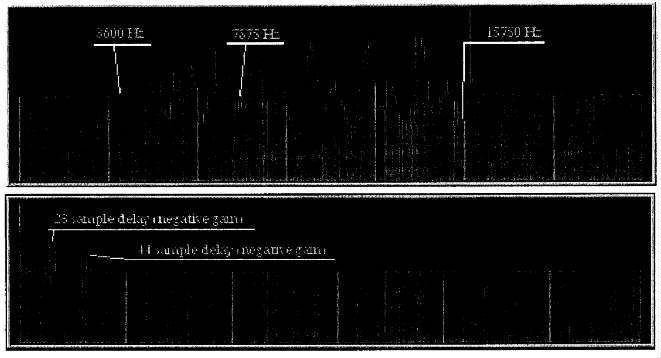
Fig. 2. A short-term complex echo. Above, the
frequency response between the watermarked and original music, taken over
1/50 second, showing a sinusoidal ripple between 8 and 16 KHz. Below, the
corresponding impulse response. The sinusoidal pattern in the frequency domain
corresponds to a pair of echoes in the time domain.
The most useful technical detail provided by the patent was that the "delay hopping" pattern was likely discrete rather than continuous, allowing us to search for appropriate frame sizes during which the echo parameters were constant. Data collection from the first second of audio showed a frame size of approximately 882 samples, or 1/50 second. We also observed that the mark did not begin until 10 frames after the start of the music, and that activity also existed in a band of lower frequency, approximately 4-8 Khz. This could be the same echo obscured by other operations, or could be a second band used for another component in the watermarking scheme. A very clear ripple in this band, indicating a single echo with a delay of about 34 samples, appears shortly before the main echo-hopping pattern begins.
The next step in our analysis was the determination of the delay hopping pattern used in the watermarking method, as this appeared to be the "secret key" of the data embedding scheme. It is reasonable to suspect that the pattern repeats itself in short order, since a watermark detector should be able to find a mark in a subclip of music, without any assistance initially aligning the mark with the detector's hopping pattern. Again, an analysis of the first second revealed a pattern of echo pairs that appeared to repeat every 16 frames, as outlined in figure 3. The delays appear to fall within six general categories, each delay approximately a multiple of 1/4 millisecond. The exact values of the delays vary slightly, but this could be the result of the phase distortion present in the music.
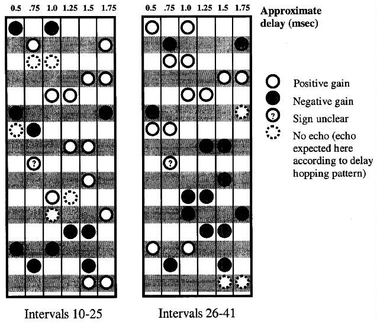
Fig. 3. The hypothesized delay hopping pattern
of technology A. Here two stretches of 16 frames are illustrated side-by-side,
with observed echoes in each frame categorized by six distinct delays: 2,
3, 4, 5, 6 or 7 times 0.00025 sec. Aside from several missing echoes, a pattern
appears to repeat every 16 frames. Note also that in each frame the echo
gain is the same for both echoes.
The reader will also note that in apparently two frames there is only one echo. If this pattern were the union of two pseudorandom patterns chosen from six possible delay choices, two "collisions" would be within what is expected by chance.
Next, there is the issue of the actual encoded bits. Further work shows the sign of the echo gain does not repeat with the delay-hopping pattern, and so is likely at least part of an embedded message. Extracting such data without the help of an original can be problematic, although the patent, of course, outlines numerous detector structors which can be used to this end. We developed several tools for cepstral analysis to assist us in the process. See [2] for in introduction to cepstral analysis; Anderson and Petitcolas [1] illustrate its use in attacks on echo hiding watermark systems.
With a rapidly changing delay, normal cepstral analysis does not seem a good choice. However, if we know that the same echo is likely to occur at multiples of 16/50 of a second, we can improve detector capability by combining the information of multiple liftered2 log spectra.
____________________
2 in accordance with the flopped vocabulary used with cepstral analysis, "liftering" refers to the process of filtering data in the frequency domain rather than the time domain. Similarly, "quefrencies" are frequencies of ripples which occur in the frequency domain rather than the time domain.
Three detector structures are shown in figure 4. In all three, a collection of frames are selected for which the echo delays are believed to be the same. For each, the liftered log of an FFT or PSD of the frame is taken. In the first two structures, we compute a cepstrum, for each frame, then either average their squared magnitudes, or simply their squares, in hopes that a spike of the appropriate quefrency will be clear in the combination. The motivation for merely squaring the spectral coefficients comes from the observation that a spike due to an echo will either possess a phase of theta or theta + pi for some value theta. Squaring without taking magnitudes can cause the echo phases to reinforce, whilst still permitting other elements to combine destructively.
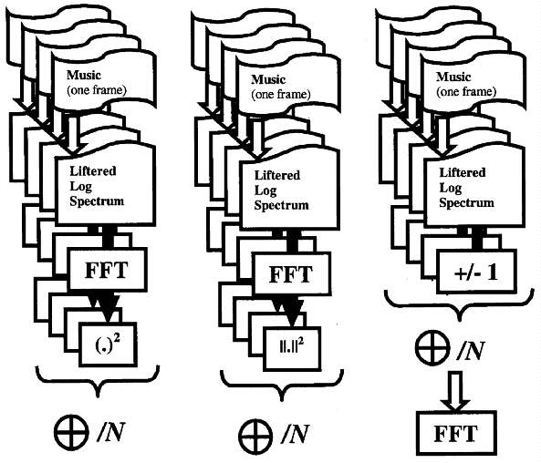
Fig. 4. Three cepstral detector structures.
In each case we have a collection of distinct frames, each believed to possess
echoes of the same delay. The first two compute cepstral data for each frame,
and sum their squares (or squared magnitudes) to constructively combine the
echo signal in all frames. The third structure illustrates a method for testing
a hypothesized pattern of positive and negative gains, possibly useful for
brute-forcing or testing for the presence of a known "ciphertext."
In the final structure, one cepstrum. is taken using a guess of the gain sign for each suspect frame. With the correct guess, the ripple should be strongest, resulting in the largest spike from the cepstral detector. Figure 5 shows the output of this detector on several sets of suspect frames. While this requires an exponential amount of work for a given amount of frames, it has a different intended purpose: this is a brute-forcing tool, a utility for determining the most probable among a set of suspected short strings of gain signs as an aid to extracting possible ciphertext values.
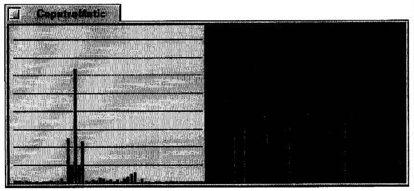
Fig. 5. Detection of an echo. A screenshot of
our CepstroMatic utility shows a combination of 4 separate frames of music,
each a fiftieth of a second long, in which the same echo delay was believed
to exist. Their combination shows a very clear ripple on the right, corresponding
to a clear cepstral spike on the left. This is a single echo at a delay of
33 samples, the delay suggested for these intervalus by the hypothesized
delay-hopping pattern.
Finally, there is the issue of what this embedded watermark means. Again, we are uncertain about a possible signalling band below 8Khz. This could be a robust mark, signalling presence of a fragile mark of echoes between 8 and 16 KHz. The 8-16KHz band does seem like an unusual place to hide robust data, unless it does indeed extend further down, and so this could very easily be hidden information whose degredation is used to determine if music has already been compressed.
Of course, knowledge of either the robust or fragile component of the mark is enough for an attacker to circumvent the scheme, because one can either remove the robust mark, or repair or reinstate the fragile mark after compression has damaged it. As mentioned earlier, this possible attack of repairing the fragile component appears to have been ruled out by the nature of the SDMI challenge oracles. One must wait and see if real-world attackers will attempt such an approach, or resort to more brute methods or oracle attacks to remove the robust component.
3.2 Attack on Challenge B
We analyzed samp1b.wav and samp2b.wav using short-time FFT. Shown in Fig. 6 are the two FFT magnitudes for 1000 samples at 98.67 sec. Also shown is the difference of the two magnitudes. A spectrum notch around 2800Hz is observed for some segments of samp2b.wav and another notch around 3500Hz is observed for some other segments of samp2b.wav. Similar notches are observed in samp3b.wav. The attack fills in those notches of samp3b.wav with random but bounded coefficient values. We also submitted a variation of this attack involving different parameters for notch description. Both attacks were confirmed by SDMI oracle as successful.
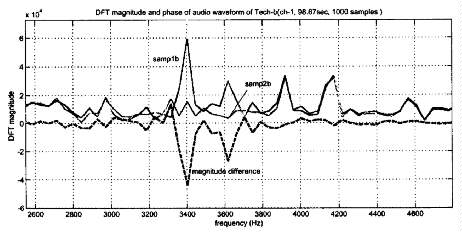
Fig. 6. Technology-B: FFT magnitudes of samp1b.wav
and samp2b.wav and their difference for 1000 samples at 98.67 sec.
3.3 Attacks on Challenge C
By taking the difference of samp1c.wav and samp2c.wav, bursts of narrowband signal are observed, as shown in Fig. 7. These narrow band bursts appear to be centered around 1350 Hz. Two different attacks were applied to Challenge C. In the first at- tack, we shifted the pitch of the audio by about a quartertone. In the second attack, we passed the signal through a bandstop filter centered around 1350Hz. Our submissions were confirmed by SDMI oracle as successful. In addition, the perceptual quality of both attacks has passed the "golden ear" testing conducted by SDMI after the 3-week challenge.
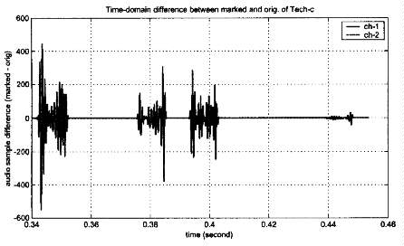
Fig. 7. Challenge-C: Waveform of the difference
between samp1c.wav and samp2c.wav.
3.4 Attack on Challenge F
For Challenge F, we warped the time axis, by inserting a periodically varying
delay. The delay function comes from our study on Technology-A, and was in
fact initially intended to undo the phase distortion applied by technology
A. Therefore the perceptual quality of our attacked audio is expected to
be better than or comparable to that of the audio watermarked by Technology-A.
We also submitted variations of this at- tack involving different warping
parameters and different delay function. They were confirmed by SDMI oracle
as successful.
The HackSDMI challenge contained two "non-watermark" technologies. Together, they appear to be intended to prevent the creation of "mix" CDs, where a consumer might compile audio files from various locations to a writable CD. This would be enforced by universally embedding SMDI logic into consumer audio CD players.
4.1 Technology D
According to SDMI, Technology D was designed to require "the presence of a CD in order to 'rip' or extract a song for SDMI purposes." The technology aimed to accomplish this by adding a 53.3 ms audio track (four blocks of CD audio), which we will refer to as the authenticator, to each CD. The authenticator, combined with the CD's table of contents (TOC), would allow a SDMI device to recognize SDMI compliant CDs. For the challenge, SDMI provided 100 different "correct" TOC-authenticator pairs as well as 20 "rogue tracks". A rogue track is a track length that does not match any of the track lengths in the 100 provided TOCs. The goal of the challenge was to submit to the SDMI oracle a correct authenticator for a TOC that contained at least one of the rogue tracks.
The oracle for Technology D allowed several different query types. In the first type, an SDMI provided TOC-authenticator combination is submitted so a that user can "understand and verify the Oracle." According to SDMI, the result of this query should either be "admit" for a correct pair or "reject" for an incorrect pair. When we attempted this test a SDMI-provided pair, the oracle responded that the submission was "invalid." After verifying that we had indeed submitted a correct pair, we attempted several other submissions using different TOC-authenticator pairs as well as different browsers and operating systems3. We also submitted some pairs that the oracle should have rejected; these submissions were also declared "invalid." Though we alerted SDMI to this problem during the challenge, the oracle was never repaired. For this reason, our analysis of Technology D is incomplete and we lack definitive proof that it is correct. That having been said, we think that what we learned about this technology, even without the benefit of a correctly functioning oracle, is interesting.
____________________
3 Specifically, Netscape Navigator and Mozilla under Linux, Netscape Navigator under Windows NT, and Internet Explorer under Windows 98 and 2000.
Analyzing the Signal Upon examination of the authenticator audio files, we discovered several patterns. First, the left and right channels contain the same information. The two channels differ by a "noise vector" u, which is a vector of small integer values that range from -8 and 8. Since the magnitude of the noise is so small, the noise vector does not significantly affect the frequency characteristics of the signal. The noise values appear to be random, but the noise vector is the same for each of the 100 provided authenticator files. In other other words, in any authenticator file, the difference between the left and right channels of the ith sample is a constant fixed value u[i]. This implies that the noise vector u does not encode any TOC-specific information.
Second, the signal repeats with a period of 1024 samples. Because the full signal is 2352 samples long, the block repeats approximately 1.3 times. Similarly to the left and right channels of the signal, the first two iterations of the repeating signal differ by a constant noise vector v. The difference between the ith sample of the first iteration and the ith sample of the second iteration differ by a small (and apparently random) integer value v[i] ranging from -15 to 15. In addition, v is the same for each of the provided authenticator files, so v does not encode any TOC-specific information.
Third, the first 100 samples and last 100 samples of the full signal are faded in and faded out, respectively. This is illustrated in Figure 8. The fade-in and fade-out are meaningless, however, because they simply destroy data that is repeated in the middle of the file. We conjecture that this fade-in and fade-out are included so that the audio signal does not sound offensive to a human ear.
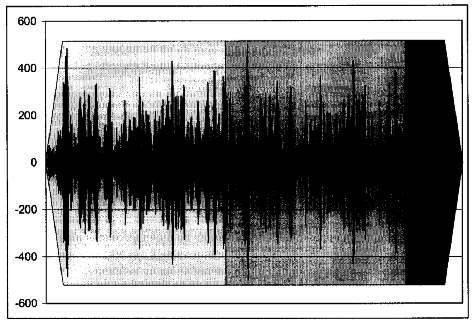
Fig. 8. In a Technology D Authenticator, the
signal fades in, repeats, and fades out.
Extracting the Data Frequency analysis on the 1024 sample block shows that almost all of the signal energy is concentrated in the 16-20kHz range, as shown in Figure 9. We believe this range was chosen because these frequencies are less audible to the human ear. Closer examination shows that this l6-20kHz range is divided up into 80 discrete bins, each of which appears to carry one bit of information. As shown in Figure 10, these bits can be manually counted by a human using a graph of the magnitude of signal in the frequency domain.
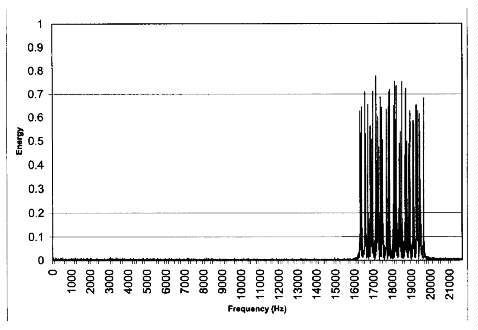
Fig. 9. Magnitude vs. Frequency of Technology
D Authenticator
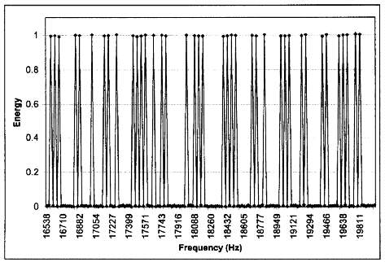
Fig. 10. Individual Bits From a Technology D
Authenticator
Close inspection and pattern matching on these 80 bits of information reveals that there are only 16 bits of information repeated 5 times using different permutations. using the letters A-P to symbolize the 16 bits, these 5 permutations are described in Figure 11.
ABCDEFGHIJKLMNOP
OMILANHGPBDCKJFE
PKINHODFMJBCAGLE
FCKLGMEPNOADJBHI
PMGHLECAKDONIFJB
Fig. 11. The encoding of the 16 bits of data
in Technology D
Because of the malfunctioning oracle, we were unable to determine the function used to map TOCs to authenticators, but given an actual SDMI device, it would be trivial to brute force all 216 possibilities. Likewise, without the oracle, we could not determine if there was any other signal present in the authenticator (e.g., in the phase of the frequency components with nonzero magnitude).
For the moment, let us assume that the hash function used in Technology D has only 16 bits of output. Given the number of distinct CDs available, an attacker should be able to acquire almost, if not all, of the authenticators. We note that at 9 kilobytes each, a collection of 65,536 files would fit nicely on a single CD. Many people have CD collections of 300+ discs, which by the birthday paradox makes it more likely than not that there is a hash collision among their own collection.
Our results indicated that the hash function used in Technology D could be weak or may have less than 16 bits of output. In the 100 authenticator samples provided in the Technology D challenge, there were 2 pairs of 16-bit hash collisions. We will not step through the derivation here, but the probability of two or more collisions occurring in n samples of X equally likely possibilities is:
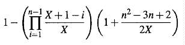
If the 16-bit hash function output has 16 bits of entropy, the probability of 2 collisions occurring in n = 100 samples of X = 216 possibilities is 0.00254 (by the above 1.5 equation). If X ~ 211.5, the chances of two collisions occurring is about even. This suggests that either 4 bits of the 16-bit hash output may be outputs of functions of the other 12 bits or the hash function used to generate the 16-bit signature is weak. It is also possible that the challenge designers purposefully selected TOCs that yield collisions. The designers could gauge the progress of the contestants by observing whether anyone submits authenticator A with TOC B to the oracle, where authenticator A is equal to authenticator B. Besides the relatively large number of collisions in the provided authenticators, it appears that there are no strong biases in the authenticator bits such as significantly more or less 1's than 0's.
4.2 Technology E
Technology E is designed to fix a specific bug in Technology D: the TOC only mentions the length of each song but says nothing about the contents of that song. As such, an attacker wishing to produce a mix CD would only need to find a TOC approximately the same as the desired mix CD, then copy the TOC and authenticator from that CD onto the mix CD. If the TOC does not perfectly match the CD, the track skipping functionality will still work but will only get "close" to track boundaries rather than reaching them precisely. Likewise, if a TOC specified a track length longer than the track we wished to put there, we could pad the track with digital silence (or properly SDMI-watermarked silence, copied from another valid track). Regardless, a mix CD played from start to end would work perfectly. Technology E is designed to counter this attack, using the audio data itself as part of the authentication process.
The Technology E challenge presented insufficient information to be properly studied. Rather than giving us the original audio tracks (from which we might study the unspecified watermarking scheme), we were instead given the tables of contents for 1000 CDs and a simple scripting language to specify a concatenation of music clips from any of these CDs. 'Me oracle would process one of these scripts and then state whether the resulting CD would be rejected.
While we could have mounted a detailed statistical analysis, submitting hundreds
or thousands of queries to the oracle, we believe the challenge was fundamentally
flawed. In practice, given a functioning SDMI device and actual SDMI-protected
content, we could study the audio tracks in detail and determine the structure
of the watermarking scheme.
In this paper, we have presented an analysis of the technology challenges issued by the Secure Digital Music Initiative. Each technology challenge described a specific goal (e.g., remove a watermark from an audio track) and offered a Web-based oracle that would confirm whether the challenge was successfully defeated.
We have reverse-engineered and defeated all four of their audio watermarking technologies. We have studied and analyzed both of their "non-watermarking" technologies to the best of our abilities given the lack of information available to us and given a broken oracle in one case.
Some debate remains on whether our attacks damaged the audio beyond standards measured by "golden ear" human listeners. Given a sufficient body of SDMI-protected content using the watermark schemes presented here, we are confident we could refine our attacks to introduce distortion no worse than the watermarks themselves introduce to the the audio. Likewise, debate remains on whether we have truly defeated technologies D and E. Given a functioning implementation of these technologies, we are confident we can defeat them.
Do we believe we can defeat any audio protection scheme? Certainly, the technical
details of any scheme will become known publicly through reverse engineering.
Using the techniques we have presented here, we believe no public watermark-based
scheme intended to thwart copying will succeed. Other techniques may or may
not be strong against attacks. For example, the encryption used to protect
consumer DVDs was easily defeated. Ultimately, if it is possible for a consumer
to hear or see protected content, then it will be technically possible for
the consumer to copy that content.
References
1. R. J. ANDERSON, AND F. A. P. PETITCOLAs. On the limits of steganography. IEEE Journal of Selected Areas in Communications 16,4 (May 1998),474-481.
2. R. P. BOGERT, M., AND J. W. TUKEY. The quefrency alanysis of time series for echoes: Cepstrum, pseudo-autocovariance, cross-ceptsrum and saphe-cracking. In Proceedings of the Symposium on Time Series Analysis (Brown University, June 1962), pp. 209-243.
3. R. PETROVIC, J. M. WINOGRAD, K., AND E. METOIS. Apparatus and method for encoding and decoding information in analog signals, Aug. 1999. US Patent No 05940135 http://www.delphion.com/details?pn=US05940135__.
4. SECURE DIGITAL MUSIC INITIATIVE. Call for Proposals for Phase II Screening Technology, Version 1.0, Feb. 2000. http://www.sdmi.org/download/FRWG00022401-Ph2_CFPv1.0.PDF.
5. SECURE DIGITAL MUSIC INITIATIVE. SDMI public challenge, Sept. 2000. http://www.hacksdmi.org.